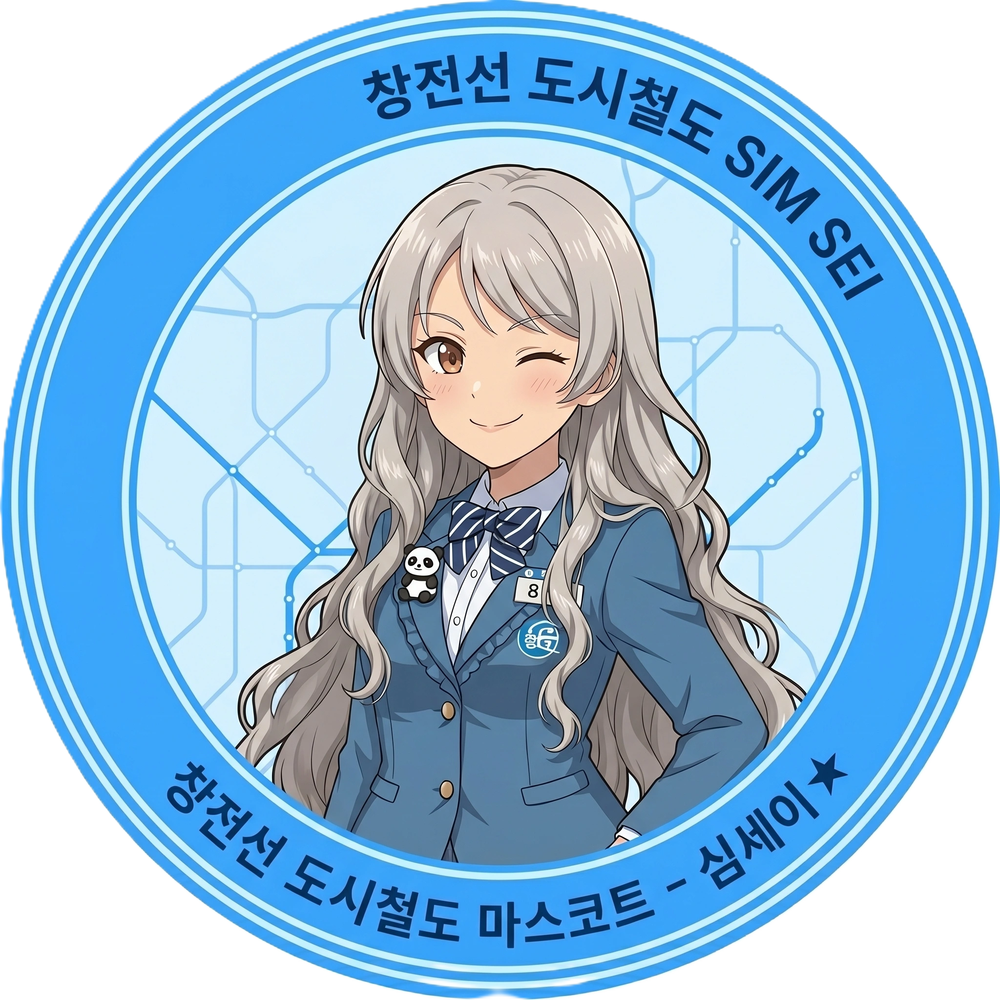

효빈교통공사 캐릭터들
| 등 장 인 물 |
1호선 | 2호선 | 3호선 | 4호선 | 5호선 | 창전선 |
|---|---|---|---|---|---|---|
 고나미 고나미 |
 하루빈 하루빈 |
 박라미 박라미 |
 다로나 다로나 |
 미소하 미소하 |
 심세이 |
|
| 6호선 | 7호선 | 8호선 | 빈효선* | |||
 라세나 라세나 |
 임세정 임세정 |
 임세하 임세하 |
 유리아 유리아 |
 전노아 전노아 |
||
|
* 빈효선: 노선 운영은 효빈교통공사가 아닌 코레일(한국철도공사)이 담당하지만, 지역 인프라 특성상 같이 묶여서 캐릭터 사업으로 진행됨. * 창전선 (본 문서 캐릭터 소속) 등 신규 노선은 개통 및 캐릭터 정식 데뷔 시점에 맞춰 틀에 추가될 예정입니다. (현재 심세이 정식 등재 완료) |
||||||
- 1. 개요
- 2. 상세 설정
- 2.1. 성격: 감성과다 쿨뷰티 (허세)
- 2.2. 학업 및 능력
- 2.3. 정치 성향
- 2.4. 외형 및 디자인
- 2.5. 목소리 및 성우 연기
- 3. 인간 관계
- 4. 특수 설정 및 트리거
- 5. 여담 (빵집 평행이론)
1. 개요
"F학점? 훗, 내 성적표의 F는 Fail이 아니야. Framing의 F지." (학사경고장을 마스킹 테이프로 꾸미며)
"사능동 갓 구운 식빵의 결이... 내 인생보다 부드럽고 아름다워."
효빈권 광역전철 3호선을 상징하는 마스코트 캐릭터. 2004년에 데뷔했다. 직업은 대학생이며, 효빈시 자타공인 최고 명문 사립대인 엽월대학교 경영학과에 무려 '현역'으로 입학해 재학 중인 수재다. 3호선 최초 개통일인 2월 9일이 생일이다.
3호선의 이미지 컬러인 노란색(#FFCC11)과 찰떡같이 어울리는 화려한 금발(또는 탈색) 머리가 트레이드마크. 도회적이고 차가운 '자칭 쿨뷰티 퀸카' 기믹으로 일본 팬덤에서는 초기 인기 투표 1위를 휩쓰는 기염을 토했다. 하지만 파면 팔수록 "덕질이 전공 수업을 이기는" 심각한 구조적 결함을 안고 있으며, 오글거리는 감성과 허세로 떡칠된 인스타그램 피드를 자랑하는 노답 빵순이 여대생임이 밝혀져 묘한 갭 모에를 형성하고 있다.
2. 상세 설정
2. 상세 설정
2.1. 성격 및 배경: 감성과다 쿼터제 쿨뷰티 (그리고 허세)
표면적으로는 범접할 수 없는 '얼음공주 쿨뷰티'를 표방한다. 엽월대 캠퍼스 내에서도 눈에 띄는 화려한 외모에, 경영학도 특유의 '효율'과 '마케팅적 사고'를 입에 달고 산다. 동기들이 밥 먹자고 해도 "미안, 난 지금 나만의 골든 타임(프레이밍)을 쫓아야 해서."라며 차갑게 돌아서는 일이 다반사다.
이러한 독보적인 분위기와 천연 금발은 그녀가 미국계 쿼터(Quarter) 한국인이라는 배경에서 기인한다. 과거 주한미군으로 한국에 왔다가 할머니의 미모에 홀딱 반해 제대 후 효빈시에 말뚝을 박아버린 미국인 할아버지의 로맨틱한 유전자 덕분. 덕분에 3호선 마스코트 중 유일하게 이국적인 핏이 나온다. 가끔 당황하면 본인도 모르게 서툰 영어 감탄사가 튀어나오는데, 본인은 이를 "글로벌 마케팅적 마인드가 몸에 배어버린 부작용"이라며 필사적으로 허세를 부린다.
실상은 그 누구보다 '오늘만 사는' 극강의 감성파이자 허세러다. 특히 '연출'과 '브랜딩(자아도취)'에 미친 듯이 집착하여, 비 오는 날 지하철역 스크린도어를 찍어놓고 인스타에 #비오는날 #도시의눈물 #메탈릭한영혼의울림 같은 끔찍한 해시태그를 달아야 직성이 풀린다. 무엇보다 해가 질 무렵인 '골든 아워'가 다가오면 뇌 속 이성 회로가 셧다운되며, 교수님이 출석을 부르든 말든 카메라를 들고 강의실 뒷문으로 탈주해 버리는 '감성 폭주'를 주기적으로 일으킨다.
2.2. 학업 및 능력
명문 엽월대에 당당히 합격할 정도로 기본적인 머리는 비상하지만, 현재 뇌 용량의 90%를 '사진 구도'와 '어느 빵집 빵이 더 맛있는가'에 할애하고 있다.
| 구분 | 상세 내용 |
|---|---|
| 학업 성향 |
명문대생의 짬바 + 사진/콘텐츠 감각 SSS급
경영 전공: C+ ~ B0
교양(사진학): A+
통계학: F
종합 GPA 3.0 언저리 (아슬아슬한 학사경고 방어선)
|
| 특기 | 스냅/풍경 사진 촬영, 다꾸(다이어리 찢어지게 꾸미기), 4개 국어 프리토킹[2] |
| 철덕 레벨 |
B+ (감성 철도형·풍경 덕후) 열차의 모터 제원이나 스펙엔 관심 1도 없음. 오직 '노을을 등지고 달리는 전동차의 실루엣'에만 환장한다. |
엽월대 경영학과라는 타이틀이 무색하게 전공 성적은 바닥을 기어 다닌다. 그 정점을 찍은 사건이 바로 1학년 1학기 '경영통계학 F학점 참사'. 효빈교통공사의 3호선 신형 전동차가 국내 최초로 시운전을 한다는 소식을 듣고, "지금 이 첫 주행의 프레이밍을 담지 못하면 내 예술 혼이 죽는다!"라며 전공필수 기말고사를 장렬하게 째버린 것이다.
이후 교수님 메일로 자기가 찍은 신형 열차 고화질 사진 30장과 함께 '이것이 진정한 마케팅 현장 실습이 아니겠습니까?'라는 미친 소명서를 보냈으나 가차 없이 F를 맞았다. 당연한 거다. 그런데도 라미는 학사경고 통지서를 다이어리에 붙이고 화려한 마스킹 테이프로 꾸민 뒤 "위기는 곧 기회다★"라고 적어두는 소름 돋는 멘탈을 과시했다.
2.3. 정치 성향
對 윤대환: 분노를 넘어선 혐오.
정치적 신념 때문이 아니다. 윤대환 시장 재임 시절, 무리한 예산 삭감으로 인해 3호선 열차 지연 운행과 고장이 밥 먹듯이 발생했는데, 이 때문에 라미의 철저한 '출사(사진 촬영) 스케줄'이 꼬여버리기 일쑤였다. 특히 자기가 계산해 놓은 완벽한 '골든 아워'에 열차가 10분 연착되어 역광 타이밍을 놓쳤던 날, "내 완벽한 셔터 찬스를 망친 저 자는 시장 자격이 없다!"며 길길이 날뛰었다.
對 박효빈: 열렬한 지지 (덕질 친화적 시장).
현 박효빈 시장이 취임한 후, HAF(효빈 애니메이션 페스티벌) 등 각종 서브컬처 행사를 전폭적으로 지원하고 지하철 연장 운행을 실시해 준 덕분에 라미의 덕질 라이프 질이 수직 상승했다. HAF 기간마다 고퀄리티 코스프레어들을 촬영하느라 정신이 없으며, "역시 덕후의 심연을 아는 분이야말로 진정한 지도자다"라며 무한 찬양을 보낸다.
2.4. 외형 및 디자인 (공식 로고 vs 현실 전신)
박라미의 외형은 3호선의 상징색(#FFCC11)에 맞춘 화려한 금발 하이 포니테일과 맑고 둥근 파란색 눈동자를 지녀 비주얼 자체는 도회적인 '쿨뷰티'의 정석과도 같아 보인다. 하지만 그녀의 전신 일러스트와 공식 로고 사이에는 심각한 설정 붕괴갭 모에가 존재하며, 이는 박라미를 '자칭 쿨뷰티 호소인'으로 만드는 결정적인 트리거근거가 된다.
📸 공식 로고: 철저히 포장된 쿨뷰티
공식 원형 로고 속의 박라미는 '효빈 도시철도 3호선 마스코트'라는 권위 있는 틀 안에서, 차분하고 정돈된 '쿨뷰티'의 이미지로 철저하게 포장되어 있다. 오른쪽 눈을 찡긋 윙크하고는 있지만, 이는 그녀가 '도회적이고 여유로운 매력'을 어필하기 위해 고도의 계산 끝에 던진 제스처라는 것이 학계의 정설주장이다. 로고의 깔끔한 구성과 어우러져, 3호선의 세련되고 도시적인 이미지를 완벽하게 대변하는 엘리트 마스코트처럼 보인다.
👻 현실 전신: 누가 봐도 명랑한 빵순이
그러나 공식 전신 일러스트를 마주하는 순간, 로고 속의 쿨뷰티는 온데간데없이 사라진다. 편안한 회색 후드티에 쫙 빠진 블루 스키니진, 하얀색 스니커즈 차림은 누가 봐도 지극히 캐주얼한 '명랑한 여대생 1'이다. 오른손에 든 테이크아웃 커피는 도회적인 프레이밍을 위한 소품이라기보다는, '빵 먹을 때 마실 생명 유지 장치'에 가깝다.
무엇보다 해맑게 볼을 붉히며 손가락 브이(V) 사인을 그리는 저 표정에서는 시크함이나 도도함은 1도 찾아볼 수 없다. 등에 멘 커다란 갈색 백팩 안에는 두꺼운 경영학 전공 서적보다는 사능동에서 쓸어 온 '갓 구운 식빵'과 '초코 소라빵'이 터지기 직전까지 꽉꽉 들어차 있어, 그녀가 도회적인 프레이밍을 쫓는다빵 냄새를 쫓아 캠퍼스를 휘젓고 다닌다는 목격담을 증명해 준다. (가끔 휴게 시간에 빵을 우물거리며 승강장 스크린도어 너머로 노을을 아련하게 쳐다보는 모습이 목격된다.)
2.5. 목소리 및 성우 연기
'자칭 쿨뷰티'라는 설정에 걸맞게 한일 양국 모두 지적이고 우아한 누님 톤, 혹은 감정이 절제된 톤을 구사하는 성우들이 배정되었다. 문제는 라미의 속알맹이가 '감성에 살고 허세에 죽는 빵순이'라는 점. 이 때문에 엄청나게 진지하고 고급스러운 목소리로 영양가 없는 헛소리를 남발하는 기적의 성우 낭비(?)가 발생하며 팬들을 열광시키고 있다.
-
한국판 (CV. 이새아)
한국판 담당 성우인 이새아는 '원신'의 여행자(루미네) 등 우아하고 지적인 쿨뷰티 계열 목소리로 유명하다. 평소 캠퍼스를 거닐 때나 인스타 라이브를 켤 때는 이 우아한 목소리를 한껏 끌어올려 도도한 퀸카 연기를 펼친다. 하지만 '골든 아워'를 놓치거나 F학점 성적표를 마주하는 순간, 그 특유의 지적인 아우라가 와장창 박살 나며 현실 여대생의 처절하고 찌질한 비명을 지르는 연기가 압권이다. 한 번 무너지면 하이톤으로 오열하는데 그 갭이 엄청나다. -
일본판 (CV. 이시카와 유이)
일본판 담당 성우인 이시카와 유이는 '진격의 거인'의 미카사 아커만, '바이올렛 에버가든'의 바이올렛 등 감정이 억눌린 전사나 처절하고 비장한 연기의 끝판왕이다. 덕분에 라미가 무언가에 감명을 받을 때마다 심각한 부작용이 속출한다. 예를 들어 사능동에서 갓 구운 바게트를 한 입 베어 물 때, 마치 인류의 명운이 걸린 최후의 결전을 앞둔 전사처럼 처절하고 비장한 목소리로 "이 바게트의 텍스처... 마치 구원받지 못한 내 전공 학점 같아..."라고 읊조린다.빵 하나 먹는데 세계관이 멸망할 것 같다.팬들은 이를 두고 '최고급 식재료로 라면 끓여 먹는 느낌의 성우 캐스팅'이라며 극찬을 아끼지 않는다.
3. 인간 관계
- 임세하 (7호선): 영혼의 단짝이자 구제 불능의 'F학점 듀오'. 임세하가 술자리에서 "야... 나 신형 모터 뜯어보는 거 구경하다가 전공 F 받았어..."라고 고백했을 때, 라미가 소주잔을 탁 내려놓으며 "난 완벽한 프레이밍(구도) 잡으려고 철교에 매달려 있다가 통계학 F 받았어."라고 화답했다. 둘은 서로를 껴안고 "학점 따위는 기득권이 만든 허상에 불과해!"라며 엉엉 울었다고 한다.
- 전노아 (빈효선): 엽월대(라미) vs 해운대(노아)라는 '효빈대 카르텔'에 대항하는 '비(非)효빈대 아웃사이더 연합'의 동지. 노아가 매일 밤샘 조별과제로 다크서클이 턱까지 내려와 고통받을 때, 라미가 "네 PPT는 심미성이 떨어져. 비켜봐."라며 현란한 디자인 감각으로 템플릿을 심폐 소생시켜 주는 츤데레 짓을 종종 한다.
- 하루빈 (2호선): 고등학교 윗 기수 선배. 하루빈이 뺀질거리며 "우리 라미~ 예쁜 사진 찍는 것도 좋지만 학점은 좀 챙겨야지? F가 뭐니 F가~" 하고 깐족거리면, 라미는 특유의 쿨뷰티 표정을 무너뜨리지 않고 유창한 불어나 스페인어로 팩트 폭력을 날려버리는 환상의 티키타카를 보여준다.
3.1. 가족 관계 (자유로운 글로벌 쿼터 혼혈 가문)
👴 외할아버지: 이리차드 (Richard Lee)
출신/경력: 미국 텍사스 주 오스틴 (귀화) / 전직 주한미군 육군 소령 (퇴역)
담당 성우: 권혁수 (韓) / 나카타 조지 (日)
- 라미 집안 '금발벽안' 유전자의 근원. 본래 성은 '리처드'였으나 귀화 시 발음을 살려 이(李)씨로 등록함.
- 파병 왔다가 라미 외할머니에게 반해 제대 후 아예 귀화해버린 로맨티스트. 텍사스 카우보이 외모에 구수한 효빈 사투리를 씀.
손주들에게 "English is important, but 밥심이 최고다"라고 가르침.
👨 아버지: 박선호 (Park Seon-ho)
- 에너제틱한 아내와 자식들 사이에서 유일하게 차분함을 유지하는 평화주의자. 딸 라미의 꿈을 든든하게 지지해줌.
- 영어 실력은 수준급이지만 집에서는 아내와 영어로 싸우면 밀리기 때문에 무조건 한국어만 고집함.
딸 라미가 3호선 마스코트 인형을 사오자 회사 책상 명당자리에 배치해둠.
👩 어머니: 이애련 (Elena Lee)
학력/경력: 효빈대학교 서양화과 / 효빈 아트센터 큐레이터 (백인-한국인 하프 혼혈)
담당 성우: 이선 (韓) / 오리카사 아이 (日)
- 라미의 금발벽안과 ENTP 성격의 모태. 집안 분위기를 아메리칸 브렉퍼스트와 커피로 고정한 장본인.
화나면 영어가 먼저 튀어나오며, 이때는 남편과 자식들 모두 조용히 도넛을 먹으며 눈치를 본다.
👦 오빠: 박루이 (Louie Park)
- 라미와 판박이인 쿼터 혼혈. 24살 군필 복학생임에도 엄청난 동안이라 고등학생으로 오해받음.
- 동생을 'Rami'라고 부르며 격식 없이 깐족거리는 천적.
본인은 코딩 과제에 찌들어 살면서 맨날 노는 동생이 안 잘리는 걸 신기해함.
4. 특수 설정 및 트리거
🎙️ 마성의 유이 내레이션 모드 (Yui Narration)
엽월대 경영학과 전공 수업 발표 시간, 라미가 마이크를 잡으면 강의실의 공기가 달라진다. 일본어판 성우인 이시카와 유이(바이올렛 에버가든, 미카사 아커만 役 등) 특유의 극도로 차분하고 애절한 독백 톤이 빙의되어 프레젠테이션을 시작하기 때문이다.
"재무제표의 숫자들... 그것은 기업이 흘린 피와 땀의 궤적. 우리는 지금, 자본주의라는 이름의 무한한 궤도를 달리는 가엾은 열차와도 같습니다..."
이 미친 감성의 톤으로 발표를 하면 떠들며 폰을 보던 학생들도 홀린 듯이 조용해지고, 깐깐한 교수님마저 감동하여 고개를 끄덕이게 만드는 기적의 아우라를 뿜어낸다. 하지만 대본을 다시 읽어보면 경영학적 알맹이는 1도 없는 감성 헛소리라 최종 학점은 기가 막히게 C+이 나온다.
🌅 골든 아워의 통제 불능 망령
해가 뉘엿뉘엿 넘어가며 온 세상을 황금빛으로 물들이는 '골든 아워(Golden Hour)'가 되거나, 비가 추적추적 내려 감성이 폭발하는 날씨가 되면 라미의 이성 제어 장치가 완전히 박살 난다.
"이 빛깔... 이 습도... 오늘 이 순간이 아니면 영원히 필름에 담을 수 없어!"라며 조별 과제 회의 도중 카메라만 들고 창문으로(?) 탈주하거나, 중요한 데이트 약속에 2시간씩 늦는 일이 다반사다. 그녀의 인스타그램에는 그렇게 목숨 걸고 찍은 숨 막히는 감성의 3호선 철도 사진이 가득하지만, 그 대가로 출석 점수는 이미 마이너스를 뚫고 지하 암반수로 처박힌 지 오래다.
5. 여담
🏖️ [비주얼] 유니폼이 억제해온 모델급 기럭지의 실체
평소 3호선의 노란색 포인트가 들어간 단정한 유니폼을 입었을 때도 "비율이 참 좋다"는 소리를 들었으나, 최근 해변가에서 찍힌 수영복 사진 한 장으로 유니폼이 그동안 그녀의 우월한 기럭지를 얼마나 억제해왔는지가 증명되었다.
쿼터 한국인 특유의 길쭉길쭉한 팔다리와 B83 - W59 - H84의 군더더기 없는 슬렌더 탄탄 바디는 그야말로 '살아있는 마네킹' 수준. 특히 금발 포니테일에 네이비&베이지 원피스 수영복을 매치하고 아이스 아메리카노를 든 자태는 효빈시 홍보 사진이 아니라 보그(VOGUE) 표지 같다는 찬사가 쏟아졌다. 2호선 하루빈이 '압도적 질량'이라면, 박라미는 '완벽한 비율'로 승부하는 효빈철도의 양대 산맥이다.
🥁 [밈] 사능동 빵집 드러머와의 평행이론
3호선의 이미지 컬러가 노란색(#FFCC11)인데다, 라미 본인이 타의 추종을 불허하는 '중증 빵순이'라는 설정이 겹치면서 서브컬처 팬덤 사이에서 엄청난 밈이 탄생했다. 바로 옆 동네 밴드 애니메이션(BanG Dream!)의 야마부키 사아야와 영혼의 쌍둥이 취급을 받는 것!
- 라미는 스트레스받는 날이면 거리가 꽤 먼 북구 사능동의 로컬 빵집까지 원정을 가 '갓 구운 식빵'과 '초코 소라빵'을 쓸어 담는 기행을 벌인다.
거기서 드럼 치는 여학생을 봤다는 목격담은 덤. - 팬아트에서는 도도한 쿨뷰티 표정의 라미가 양손에 드럼 스틱 대신 '바게트 빵'을 쥐고 있다거나, 야마부키 베이커리 앞치마를 입고 "어서 오세... 요."라며 현타 온 표정으로 서 있는 짤이 쏟아져 나온다.
- 심지어 엽월대 밴드 동아리방 근처에서 드럼 소리만 들리면 본인도 모르게 어깨를 들썩이며 "포피파 피포파...!" 같은 정체불명의 주문을 중얼거린다는 괴담이 돌고 있다.
이쯤 되면 그냥 본인이 사아야 오시(팬)다.
🎀 [밈] 학생회장 출신 스쿨 아이돌과의 시각적 평행이론
공식 전신 일러스트가 처음 공개되었을 때, 금발 포니테일과 맑은 파란색 눈동자(벽안), 그리고 둥글고 또렷한 특유의 눈매 덕분에 『러브라이브! School idol project』의 아야세 에리와 굉장히 닮았다는 반응이 쏟아졌다.
실제로 효빈교통공사 캐릭터들 중에서 러브라이브 캐릭터와의 시각적 일치도가 가장 높은 부동의 1위로 꼽힌다. 2위로는 『러브라이브! 선샤인!!』의 타카미 치카와 닮았다는 소리를 듣던 전노아(빈효선)가 있었으나, 최근 노아가 머리를 길게 기르면서 시각적 구분이 확실해진 반면, 박라미는 데뷔 때부터 지금까지 여전히 아야세 에리와 판박이라는 평가를 유지하고 있다.
- 단순히 색 배합(금발+벽안)뿐만 아니라, 묘하게 과거 스쿠페스(러브라이브! 스쿨 아이돌 페스티벌) 시절이 떠오르는 동글동글한 화풍 때문에 "혹시 후드티 입고 휴일 외출 나온 에리치카 아니냐"는 드립이 흥했다.
- 전설의 HAF(효빈 애니메이션 페스티벌) 해프닝: 2025년 HAF 행사 당시, 효빈교통공사 3호선 홍보 부스 앞에 세워진 박라미의 실물 크기 등신대를 보고 지나가던 외국인 러브라이버(팬)들이 "오토노키자카 학원과 한국 지하철이 콜라보레이션을 했냐!"며 흥분해 굿즈를 대량 매수하려 한 사건이 있었다. 당황한 직원이 진땀을 빼며 "No Love Live! This is Hyobin Subway! (러브라이브 아닙니다! 효빈 지하철입니다!)"라고 다급하게 해명하는 영상이 SNS에 퍼지며 엄청난 화제가 되었다.
- 여기에 사능동 빵집 밈(뱅드림 사아야)까지 겹치면서, 서브컬처 팬덤에서는 "러브라이브의 비주얼과 뱅드림의 영혼(빵)이 융합된 혼종 마스코트"라는 무시무시한 평가를 받고 있다.
- 가끔 엽월대 대학 축제(대동제)나 코스프레 행사 시즌이 되면, 팬들이 라미 일러스트에 Otonokizaka(오토노키자카) 교복을 합성한 짤을 올리며 '하라쇼(ハラショー)!'를 외치곤 한다.
- 공식 콜라보레이션 성사: 이런 압도적인 시각적 유사성과 팬덤의 열광적인 반응이 바다 건너 일본 선라이즈(반다이 남코 필름웍스) 본사에까지 전해졌는지, 놀랍게도 러브라이브! 시리즈와 효빈교통공사의 공식 콜라보레이션이 진짜로 성사되었다! 3호선 일부 열차에 아야세 에리와 박라미가 서로의 의상(오토노키자카 교복 ↔ 3호선 유니폼)을 바꿔 입고 나란히 윙크하는 일러스트가 래핑되었으며, 이때 발매된 한정판 합작 교통카드 및 굿즈 세트는 발매 3분 만에 서버를 터뜨리며 전량 매진되는 기염을 토했다.
이쯤 되면 그냥 공식이 인정한 쌍둥이 자매다.
- 외국어(영어, 일본어, 중국어)가 원어민 뺨치게 유창하다. 덕분에 대학 입학 직후 효빈국제공항역 안내 센터에서 단기 아르바이트를 한 적이 있는데, 미친 비주얼과 다개국어 스킬로 외국인 관광객들의 인스타 인증샷 명소로 등극했었다. 그러나 근무 중 창밖으로 지나가는 특별 도장 비행기를 찍겠다고 안내 데스크를 30분간 비워두는 바람에 당일 저녁 통보로 잘렸다. (...)
-
사진 속 구도를 해친다는 이유로 평소 안경 쓰는 것을 극도로 혐오하며 렌즈를 고집한다. 하지만 밤새워 벼락치기(다이어리 꾸미기)를 한 다음 날 어쩔 수 없이 뿔테 안경을 쓰고 등교하면 지적인 이미지가 200% 상승해 남학생들이 번호를 물어보려 줄을 선다.
물론 다 차갑게 씹힌다.공식 넨도로이드 굿즈에 '안경 파츠'가 은밀하게 포함된 것은 이러한 안경 라미를 숭배하는 팬들의 폭동(?)에 가까운 건의 덕분이다. - 동네 상권 살리기에 은근히 진심이다. 사능동 골목 상권이 쇠락해가는 것을 안타까워하며, 본인의 팔로워 10만짜리 감성 인스타그램 계정을 통해 사능동의 숨겨진 로컬 빵집들을 무료로 홍보해 주는 '사능동 앰버서더' 역할을 자처하고 있다. 덕분에 빵집 사장님들에게는 거의 구세주 취급을 받으며 가면 항상 소보로빵 하나를 서비스로 얹어주신다.